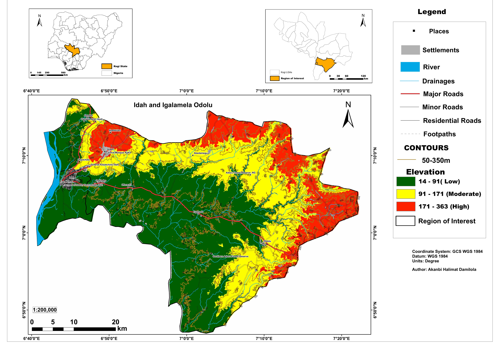

ESC or click to close
This project involved the production of a professional-grade topographic base map for Idah and Igalamela-Odolu Local Government Areas in Kogi State, commissioned by the Institute of Agricultural Research and Training (IAR&T), Obafemi Awolowo University.
Topographic base maps are foundational spatial datasets used in land use planning, agricultural research, infrastructure development, and resource management. This map was designed to full cartographic standards — integrating elevation, drainage, road networks, settlements, and key landmarks in a single production-ready output.
The map covers the two LGAs at a scale of 1:200,000, with elevation classified into three terrain zones — Low (14–91m), Moderate (91–171m), and High (171–363m) — derived from Digital Elevation Model analysis.
The final layout includes dual inset maps providing national and state-level locational context, a comprehensive legend, contour lines at 50m intervals, and a full road hierarchy from major roads down to footpaths. The map was produced in ArcGIS Pro and ArcMap to IAR&T institutional standards.

Three elevation zones derived from SRTM DEM: Low (14–91m), Moderate (91–171m), and High (171–363m), showing the terrain gradient from riverine lowlands to upland areas.
Contour lines drawn at 50m intervals from 50m to 350m elevation, providing continuous terrain shape information across both LGAs.
Major rivers and drainage networks including the Niger River corridor on the western boundary, with differentiated symbology for rivers and minor drainages.
Full road classification: Major Roads, Minor Roads, Residential Roads, and Footpaths — enabling infrastructure planning and accessibility analysis across the study area.
Named settlements and key landmarks including Federal Polytechnic Idah, School of Health Technology, Central Mosque Ajaka, and Adoru Forest Reserve.
Two inset maps providing national context (Nigeria overview with Kogi State highlighted) and state context (Kogi LGAs with the region of interest marked).
| Data Layer | Source | Use |
|---|---|---|
| SRTM DEM | USGS Earth Explorer (30m) | Elevation classification, contour generation, terrain shading |
| Road Network | OpenStreetMap / Digitized | Major, minor, residential roads and footpaths |
| River & Drainage | NigerDelta & SRTM derived | Hydrological network mapping |
| Settlement Points | Google Maps / Field verified | Labelled places and key landmarks |
| LGA Boundaries | GRID3 Nigeria | Study area delineation and inset maps |
The elevation analysis reveals a clear terrain gradient — low-lying riverine areas along the Niger River corridor in the west rising to upland zones reaching 363m in the eastern portions of Igalamela-Odolu, critical for agricultural suitability and flood risk assessment.
The road network mapping exposes significant accessibility gaps in the interior zones of both LGAs, with major road connectivity concentrated along the western corridor and limited penetration into the eastern uplands.
Two forest reserves — Adoru Forest Reserve and Southern Adoru Forest Reserve — are clearly delineated within the study area, providing spatial reference for land use planning and conservation boundary management.
Produced to full institutional cartographic standards for IAR&T, the map is publication-ready and serves as a base layer for subsequent agricultural, hydrological, and land evaluation studies in the two LGAs.